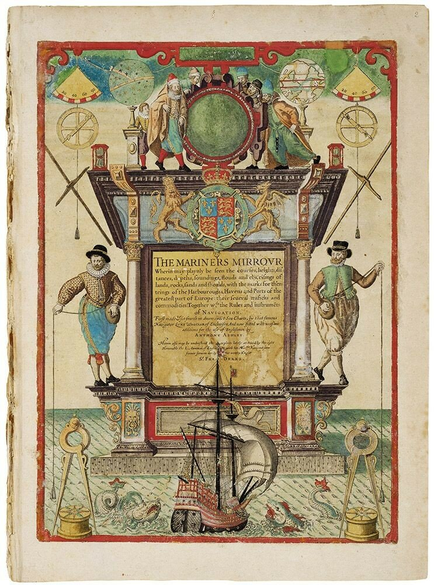
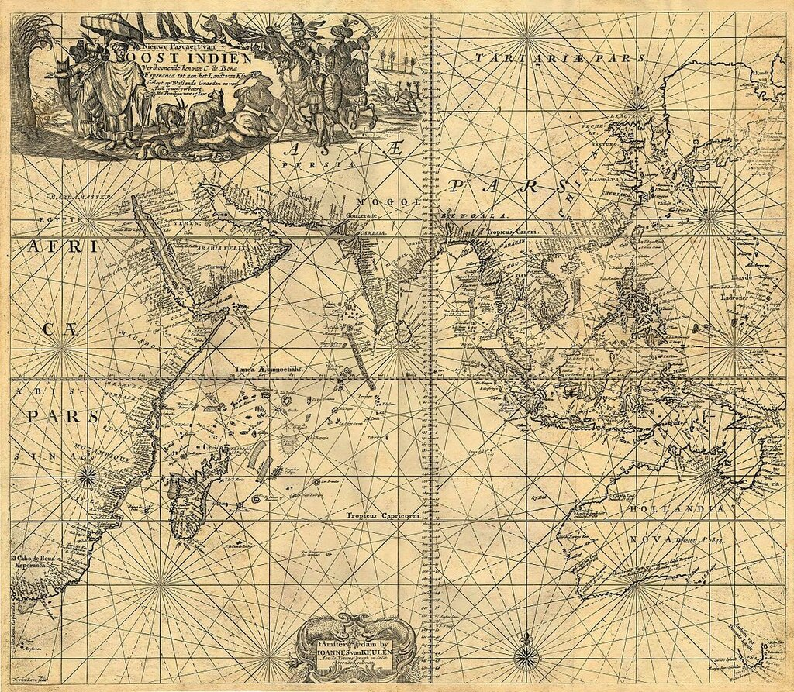
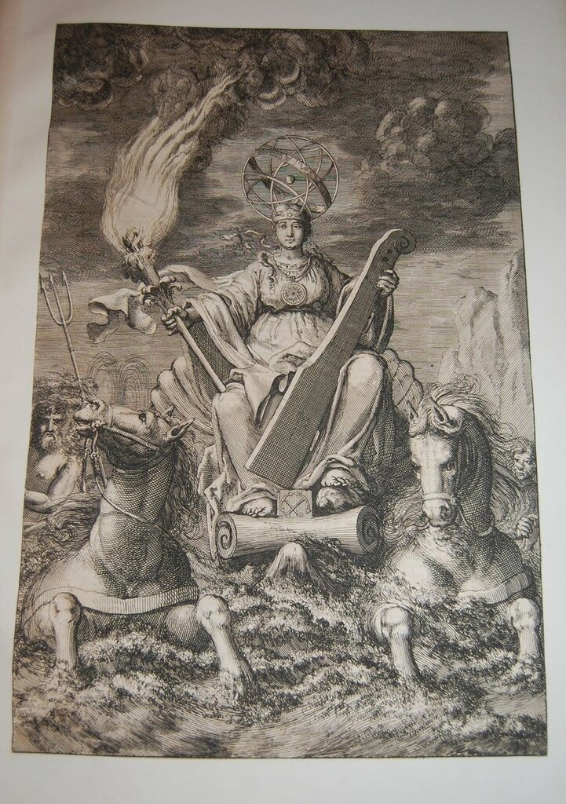

Вагенер одно время служил штурманом на голландских кораблях, затем сборщиком морских пошлин, заимствуя у коллег описания морских маршрутов и карты окрестных морей. Подборки таких описаний и карт, которые он составил к своему пятидесятилетию, привязанные к основным портам региона, послужили основой для капитального труда, за издание которого взялся известный нидерландский печатник Кристофер Плантен. Первый том двухтомного труда вышел в 1584 году в Лейдене.
После появления книги Вагенера, получившей название «Spieghel der Zeevaert» («Зеркало мореплавателя»), имя автора стало нарицательным, его книга и созданные по ее подобию навигационные пособия других авторов получили название "ваггонер" (waggoner), которое вытеснило бытовавшее до этого времени rutter.

Титульный лист первого «ваггонера», том 1 (кликабельно)
В 1588 году, несколько месяцев спустя после гибели «Непобедимой армады», в Англии по указанию Тайного Совета с книги Вагенера был сделан перевод (кстати, пиратский), получивший название THE MARINERS MIRROUR. Автором перевода был чиновник Тайного Совета сэр Энтони Эшли (Anthony Ashley).

Титульный лист The Mariners Mirrour, 1588 год, Лондон.
Книга Вагенера кардинально изменила структуру навигационных пособий в северо-западной Европе. В одном томе объединялись теперь наставления по каботажному и дальнему плаванию, таблицы приливов и отливов, вид отдельных участков побережья, навигационный альманах, описания и изображения навигационных инструментов и советы по их применению. Подробно изображались и описывались мели, давались промеры глубин в заливах и проливах.
Образец листа карты из «Spieghel der Zeevaert» (кликабельно)
Мы подробнее познакомимся с «Зеркалом мореплавателя», когда будем рассказывать о морских картах. Дальнейшую, весьма интересную, историю английских и голландских лоций и атласов морских карт XVII века пока пропустим, так как она выходит за рамки нашего рассказа об эпохе Дрейка. Сейчас же обратимся к голландским лоциям более позднего периода, чтобы начать обещанный рассказ о лоциях в русском флоте.
После создания в 1602 году Голландской Ост-Индской компании были засекречены все навигационные документы и пособия для акваторий Тихого и Индийского океана между мысом Доброй Надежды на западе и Магеллановым проливом на востоке, где компания объявила свою торговую монополию. Эти меры были направлены против французских и английских конкурентов. Те лоции и карты, которые капитаны компании получали перед отплытием на восток, подлежали строгому учету и немедленному возврату после возвращения из плавания. Навигационные документы ввиду частых копирований становились все менее точными. Стоимость карт ручной работы была значительно выше печатных карт. Кроме того, англичане и французы начали печатать свои собственные карты и лоции, качество которых неизменно росло. В такой обстановке Ост-Индская компания принимает решение издать свой многотомный морской атлас и лоцию и поручает работу над ними картографу Иоганну ван Кёлену (Johannes van Keulen)

Карта Ост-Индии из 2-го тома, составленная Иоганном ван Кёленом
В 1680 году ван Кёлен получает патент Голландии и Западной Фрисландии на занятие картографией и печатание лоций. С 1680 года начинается выпуск атласа De Groote Nieuwe Vermeerderde Zee-Atlas ofte Water-Werelt , а в следующем году выходит первый том пятитомной лоции Nieuwe Lichtende Zee-Fakkel .

Фронтиспис первого издания Zee-Fakkel (1681). Художник Jan Luyken
Работу Иоганна продолжил его сын Герард, а затем и внук Иоганн ван Кёлен II. Последнее издание Zee-Fakkel выпустил уже правнук Иоганна Хюлст.
Лоция голландских картографов получила большую известность, в Англии ее называли Sea Torch , во Франции Flambeau de la Mer. В России она была известна как Светильник морской, но обычно перевода не делали, а называли лоцию как и в Голландии – Зеефакел. Со временем это название стало нарицательным для всех лоций вообще, как мы видим из словарной статьи Словотолкователя Яновского, приведенной в эпиграфе. Однако морские историки, как уже говорилось, вскоре все перепутали и стали называть зеефакелом атласы морских карт, а не лоции. Например, Самойлов К. И. Морской словарь (1941):
«ЗЕЕФАКЕЛ (стар.) — от гол. zeefakkel, т. е. морской светильник. Так назывался голландский морской атлас или собрание морских карт.»
Также и капитальный «Словарь русского языка XVIII века» не делает различия между атласом и лоцией:
ЗЕЕФАКЕЛ 1742 (зей- 1790, также дефис), а, и ЗЕЕФАКЕЛЬ, я, м. Гол. zeefakkel. Мор. Атлас морских карт; лоция
Здесь есть еще одна неточность: время появления термина в русском языке обозначено 1742 годом, что не соответствует действительности.
Учитывая, что оспаривать утверждение такого капитального издания как «Словарь русского языка XVIII века» можно лишь на основе серьезных фактов, попробуем разобраться в этом детально. Для этого обратимся к Запискам первого русского гидрографа, исследователя Каспийского и Балтийского морей, политического деятеля, губернатора Сибири, вице-президента Государственной Адмиралтейств-коллегии Федора Ивановича Соймонова. Отрывки из Записок были опубликованы в «Морском сборнике» (1888, т. 227, № 9-10).
Известно, что в 1730 году Соймонов был назначен прокурором в адмиралтейств-коллегию, где пробыл до 1732 года, когда был назначен обер-штер-кригс-комиссаром флота. Среди его воспоминаний о том периоде своей службы есть такой рассказ (приношу извинения за длинные цитаты):
Обстоятельства о разбитии пакетбота на острове Сескаре под командою мичмана Шепелева.
В начале той весны 1732 года оный мичман на пакетботе от коллегии посылан был в Любек, и как то обыкновенно два пакетбота один во Гданск, а другой в Любек отправилися.
Он поплыл от кронштадтского порту, и будучи противу мыса Кораводни, омерк во дни (?), а в ночь пошел к острову Гогланду, держа курс на W, оставя остров Сескар в левой южной стороне полторы мили, как оный на голландских картах назначен бывал; однако около полуночи сел на том острове на мель и пакетбот разбился, а люди спаслися. По рапорту о том и по опредению коллегии определено, по силе морского устава, того мичмана военным судом судить велено; в том суде хотя мичман свое оправдание и приносил, то что он плыл по голландской карте прямым румбом к острову Гогланду, оставляя остров Сескар в левой стороне полторы мили, однако судьи, не хотя слышать того, что тот остров неправедно на голландской карте назначен не на своем месте, но много южнее того фарватера, не приемля его оправдание осудили его лишить чина и написать в матросы.
А как оное дело прислано для конфирмации в коллегию, тогда я слыша от мичмана оправдание его, рассматривал то обстоятельно, по которому оказалося, что по голландской карте мичман был невинен, а что тот остров не в надлежащем месте поставлен был на карте; тем его обвинять было невозможно, для того я предлагал коллегии, чтоб взять у капитана Мартына Янцына {Капитан Мартын Янцын был (посылан?) все острова и мели между Кронштадта и Ревеля описать с начала 1719 году; от того время на двух лоц-галиотах семь лет ежегодно от весны до осени ездил и описывал и не малое число ему дано было штурманов и штурманских учеников.} его описание и сличить с голландскою картою, что коллегиею и определено. А как оное описание получено, то и открылося, что тот остров много севернее лежит, нежели как на голландских картах находится. Коллегие рассмотря то обстоятельно определила тому мичману правым быть. А прочие предлагали чтоб по тому описанию переправить морские карты, да при том в рассуждении того что ежегодно российские корабли чрез восточное море и чрез Зунд кругом норвежских берегов к городу Архангельскому отправляются, для того чтоб голландское описание, именуемое Зеефакел или Светильник морской, перевесть на российский язык и напечатать; а в рассмотрение и поправление румбов и прочих морских терминов, чего переводчик как не морской человек знать не может, в том тот труд исправлять я обязался, что коллегии определила коллежского переводчика Берха, который и переводил под моим смотрением.
Оное описание было переведено и все, что чрез 11 лет между кронштадтским портом найдено, к тому приобщено, и от меня подано и в академии морской напечатано и по всем кораблям роздано;
Означенный Мартын Янцын, который через все сем лет не только карты, но и рапорту в коллегию не подал, и потому виноват оный капитан, а не мичман.
Это упоминание зеефакела в Записках подкреплено и архивными документами той эпохи.
10 августа 1732 года (за 10 лет до означенного в Cловаре XVIII века времени первого появления слова зеефакел в русском языке) в Журнале адмиралтейств-коллегии появилась следующая запись (№5125)
Прокуроръ Соймоновъ предлагалъ коллегіи словесно, что по опредѣленію коллегіи велѣно морскую книгу, именуемую зей-факелъ, переводить переводчику Берху, и при томъ отъ него предложено было, что какъ въ надзираніе того чтобъ тотъ переводилъ безъ лѣности, такожъ и что подлежать будетъ до исправленія, поправлять будетъ онъ, затѣмъ что безъ такого ктобъ зналъ навигацію и то искуство быть невозможно, понеже онъ уповалъ, что нѣсколько морскихъ званій оный знать не будетъ, а не такъ какъ нынѣ при переводѣ первой части первой главы явилося, что оному переводчику не знавъ многихъ званій весьма переводить трудно; а что всегда оному переводить при немъ Соймоновѣ, столько времени онъ имѣть не будетъ, того ради дабы опредѣлить ко оному переводчику штурмана Никласа и писаря Фридриха Янсена, который только у одного журнала содержащагося при адмиралтействѣ опредѣленъ, которые всегда будутъ со онымъ переводчикомъ переводить и о званіяхъ тѣхъ ему объявлять, а потомъ въ совершенномъ исправленіи какъ и прежде предлагалъ что надсматривать и исправлять будетъ онъ Соймоновъ.
Это отнюдь не одиночное и не изолированное употребление термина. Вот, например, Указ капитан-командора Бранта капитану Гове от 8 сентября 1732 года:
По указу адмиралтействъ-коллегіи велѣно къ сочиненію морской книги, именуемой зее-факелъ со имѣющагося восточнаго моря описанные берега до Ревеля, г. генералъ-маіора фонъ Любераса, прислать копію, на которой назначить вамъ острова, банки и мели подводныя и весь фарватеръ отъ Кронштадта до Ревеля принадлежащими пелинги, но вашему такожъ и бывшаго капитана Агазена журналамъ, о всемъ обстоятельно, и означенную картину прислать въ коллегію немедленно, такожъ н капитана Агазена прислать; того ради извольте приказалъ оные журналы принять и въ исполненіе по оному книгу учинять.
В последующие годы частота использования термина зеефакел только возрастала. Термин лоция на его замену пришел только в 1786 году, появившись в тексте перевода на русский язык Словаря Французской Академии (Полной французской и российской лексикон, с послѣдняго издания Лексикона Французской Академии на Российской язык переведенный собранием ученых людей: Л до З, Том 2, Императорская Типография, 1786), в объяснении известного уже нам термина rоutier:
RОUTIER, s. m. Путевникъ, лоція, лоцманская книга, книга, въ которой показаны дороги, морскіе тракты, мысы, якорныя мѣста, рейды, и проч. морская карта, или паче, собраніе морскихъ картъ.
Еще раз извините за длинный пост, но ведь не всем нравились мои короткие рассказы. Требовали «больше букав». Поэтому без обид.